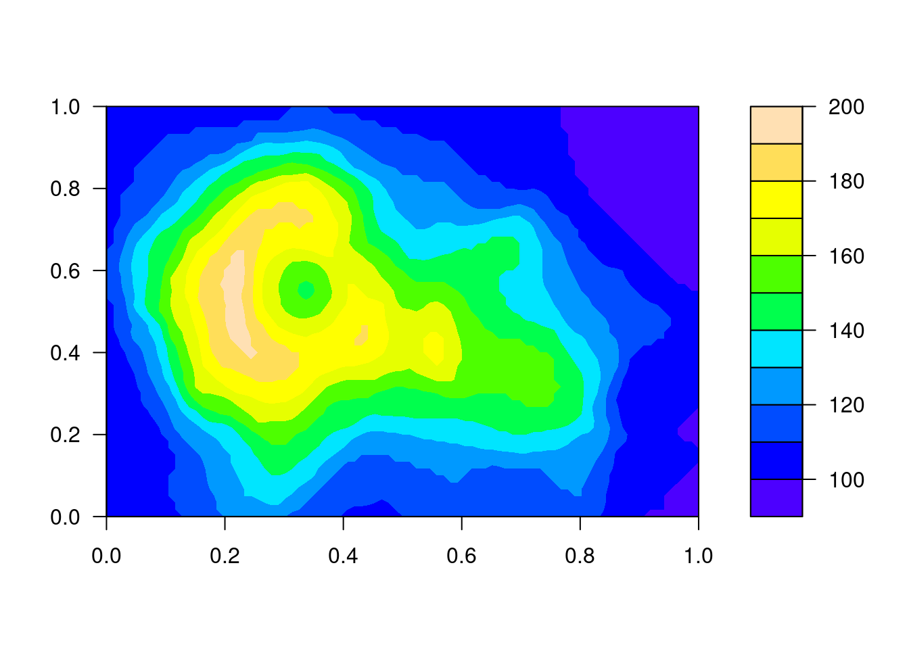
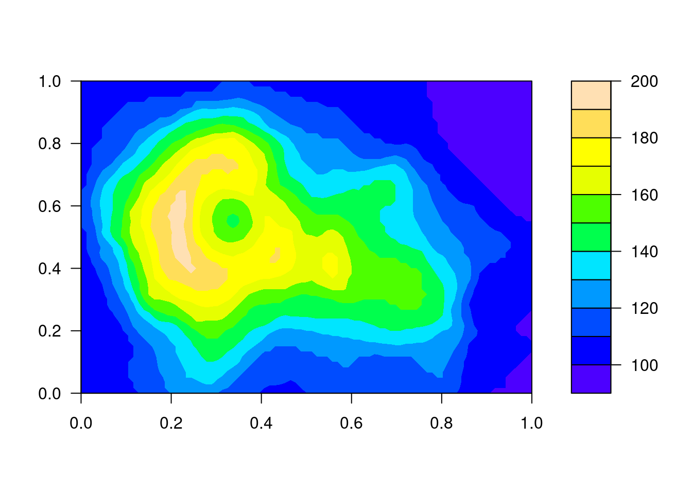
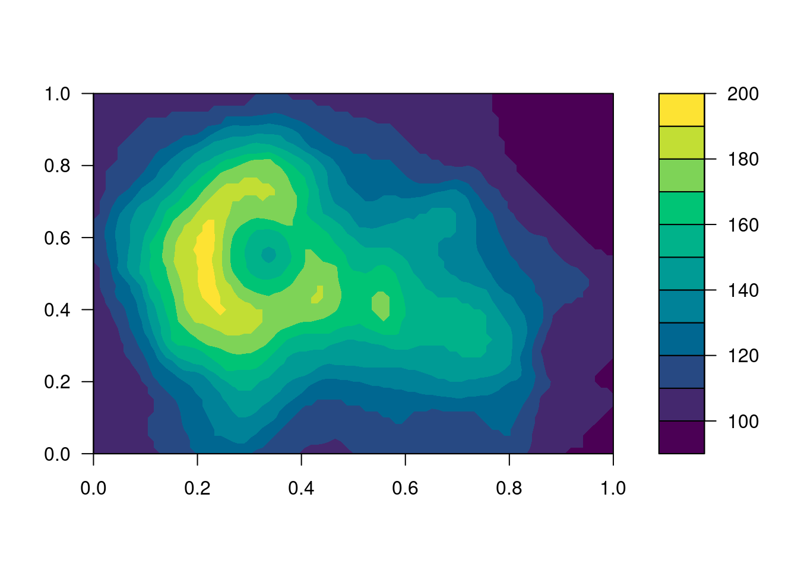
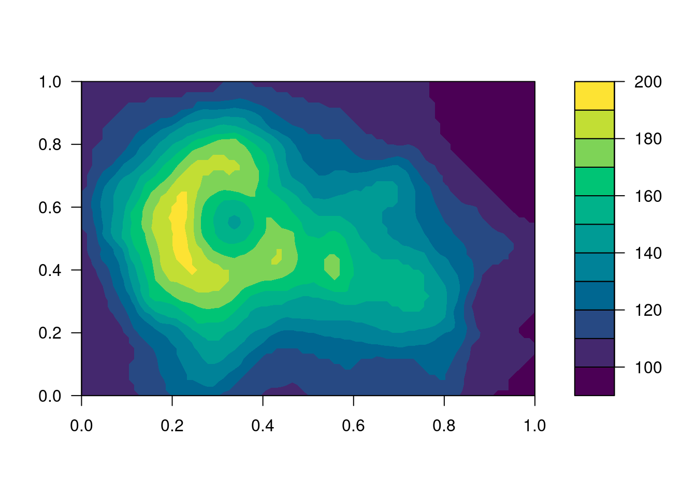
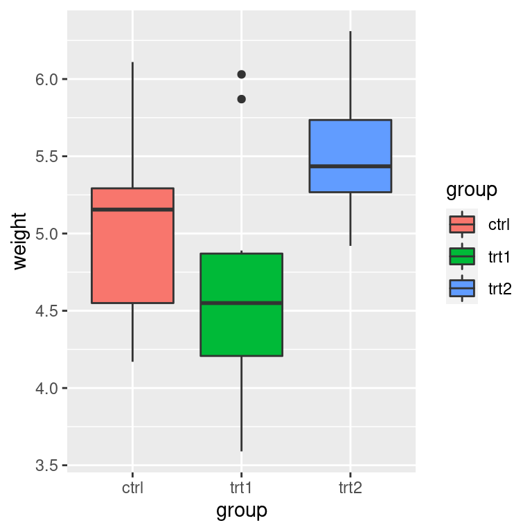
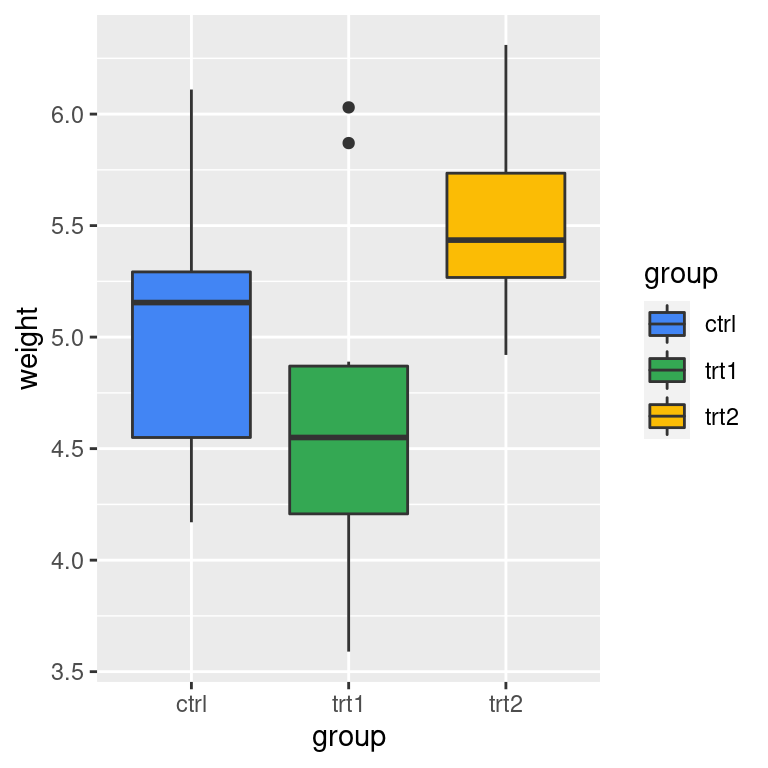
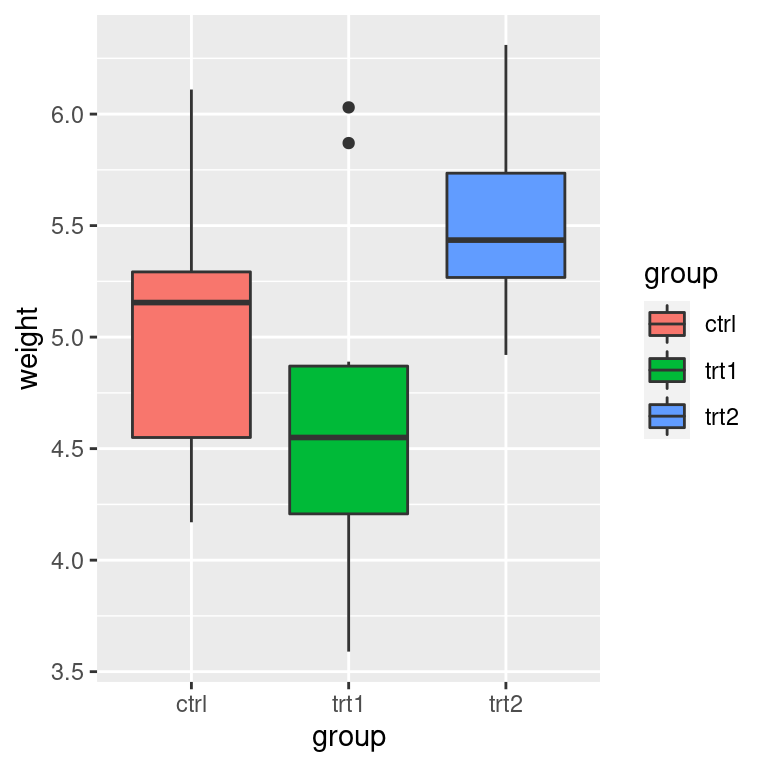
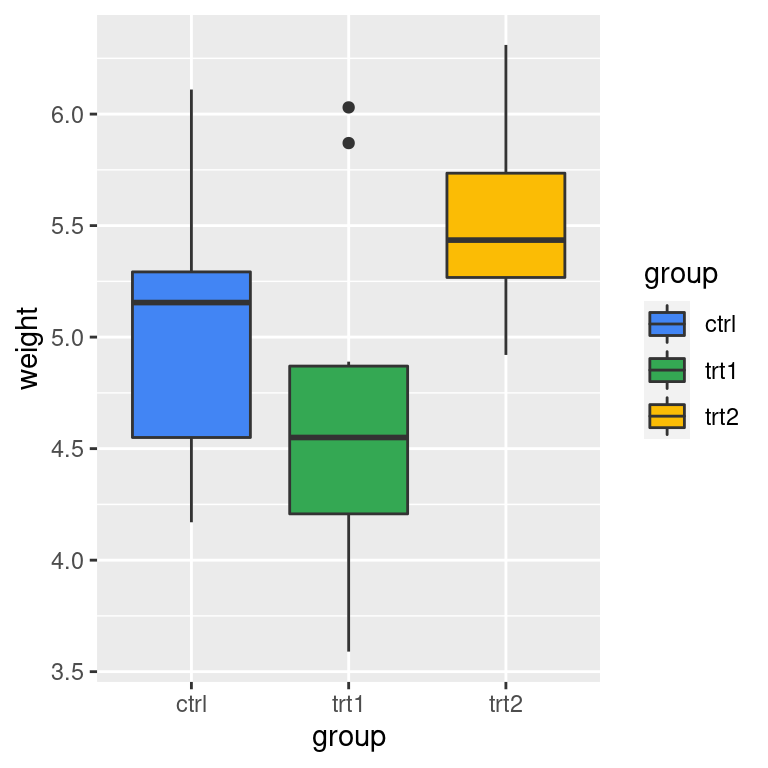

7.3 配色
配色真的是一门学问，有的人功力非常深厚，仅用黑白灰就可以创造出一个世界，如中国的水墨画，科波拉执导的《教父》，沃卓斯基姐妹执导的《黑客帝国》等。黑西装、白衬衫和黑领带是《黑客帝国》的经典元素，《教父》开场的黑西装、黑领结和白衬衫，尤其胸前的红玫瑰更是点睛之笔。导演将黑白灰和光影混合形成了层次丰富立体的画面，打造了一场视觉盛宴，无论是呈现在纸上还是银幕上都可以给人留下深刻的印象。正所谓食色性也，花花世界，岂能都是法印眼中的白骨！再说《红楼梦》里，芍药丛中，桃花树下，滴翠亭边，栊翠庵里，处处都是湘云、黛玉、宝钗、妙玉留下的四季诗歌。
为什么需要这么多颜色模式呢？主要取决于颜色输出的通道，比如印刷机，照相机，自然界，网页，人眼等，显示器因屏幕和分辨率的不同呈现的色彩数量是不一样的。读者大概都听说过 RGB、CMYK、AdobeRGB、sRGB、P3 广色域等名词，我想这主要归功于各大电子设备厂商的宣传。普清、高清、超高清、全高清、2K、4K、5K、视网膜屏，而 HSV、HCL 估计听说的人就少很多了。本节的目的是简单阐述背后的色彩原理，颜色模式及其之间的转化，在应对天花乱坠的销售时少交一些智商税，同时，告诉读者如何在 R 环境中使用色彩。早些时候我在统计之都论坛上发帖 – R语言绘图用调色板大全 https://d.cosx.org/d/419378，如果读者希望拿来即用，不妨去看看。
filled.contour(volcano, nlevels = 10, color.palette = terrain.colors)
filled.contour(volcano, nlevels = 10, color.palette = heat.colors)
filled.contour(volcano, nlevels = 10, color.palette = topo.colors)
filled.contour(volcano, nlevels = 10, color.palette = cm.colors)
 

图 7.16: R 3.6.0 以前的调色板
filled.contour(volcano, nlevels = 10,
color.palette = function(n, ...) hcl.colors(n, "Grays", rev = TRUE, ...))
filled.contour(volcano, nlevels = 10,
color.palette = function(n, ...) hcl.colors(n, "YlOrRd", rev = TRUE, ...))
filled.contour(volcano, nlevels = 10,
color.palette = function(n, ...) hcl.colors(n, "purples", rev = TRUE, ...))
filled.contour(volcano, nlevels = 10,
color.palette = function(n, ...) hcl.colors(n, "viridis", rev = FALSE, ...))
 

图 7.17: R 3.6.0 以后的调色板
hcl.colors() 函数是在 R 3.6.0 引入的，之前的 R 软件版本中没有，同时内置了 110 个调色板，详见 hcl.pals()。
7.3.1 调色板
R 预置的灰色有224种，挑出其中的调色板
grep("^gr(a|e)y", grep("gr(a|e)y", colors(), value = TRUE),
value = TRUE, invert = TRUE)## [1] "darkgray" "darkgrey" "darkslategray" "darkslategray1"
## [5] "darkslategray2" "darkslategray3" "darkslategray4" "darkslategrey"
## [9] "dimgray" "dimgrey" "lightgray" "lightgrey"
## [13] "lightslategray" "lightslategrey" "slategray" "slategray1"
## [17] "slategray2" "slategray3" "slategray4" "slategrey"gray_colors <- paste0(rep(c("slategray", "darkslategray"), each = 4), seq(4))
barplot(1:8, col = gray_colors, border = NA)
图 7.18: 灰度调色板
gray 与 grey 是一样的，类似 color 和 colour 的关系，可能是美式和英式的差别，且看
all.equal(col2rgb(paste0("gray", seq(100))), col2rgb(paste0("grey", seq(100))))## [1] TRUEgray100 代表白色，gray0 代表黑色，提取灰色调色板，去掉首尾部分是必要的
barplot(1:8, col = gray.colors(8, start = .3, end = .9),
main = "gray.colors function", border = NA)
图 7.19: 提取 10 种灰色做调色板
首先选择一组合适的颜色，比如从桃色到梨色，选择6种颜色，以此为基础，可以借助 grDevices::colorRampPalette() 函数扩充至想要的数目，用 graphics::rect() 函数预览这组颜色配制的调色板
# Colors from https://github.com/johannesbjork/LaCroixColoR
colors_vec <- c("#FF3200", "#E9A17C", "#E9E4A6",
"#1BB6AF", "#0076BB", "#172869")
# 代码来自 ?colorspace::rainbow_hcl
pal <- function(n = 20, colors = colors, border = "light gray", ...) {
colorname <- (grDevices::colorRampPalette(colors))(n)
plot(0, 0,
type = "n", xlim = c(0, 1), ylim = c(0, 1),
axes = FALSE, ...
)
rect(0:(n - 1) / n, 0, 1:n / n, 1, col = colorname, border = border)
}
par(mar = rep(0, 4))
pal(n = 20, colors = colors_vec, xlab = "Colors from Peach to Pear", ylab = "")图 7.20: 桃色至梨色的渐变
colorRampPalette() 自制调色板
create_palette <- function(n = 1000, colors = c("blue", "orangeRed")) {
color_palette <- colorRampPalette(colors)(n)
barplot(rep(1, times = n), col = color_palette,
border = color_palette, axes = FALSE)
}
par(mfrow = c(3, 1), mar = c(0.1, 0.1, 0.5, 0.1), xaxs = "i", yaxs = "i")
create_palette(n = 1000, colors = c("blue", "orangeRed"))
create_palette(n = 1000, colors = c("darkgreen", "yellow", "orangered"))
create_palette(n = 1000, colors = c("blue", "white", "orangered"))
图 7.21: colorRampPalette 自制调色板
par(mar = c(0, 4, 0, 0))
RColorBrewer::display.brewer.all()
图 7.22: RColorBrewer 调色板
# 代码来自 ?palettes
demo.pal <-
function(n, border = if (n < 32) "light gray" else NA,
main = paste("color palettes: alpha = 1, n=", n),
ch.col = c(
"rainbow(n, start=.7, end=.1)", "heat.colors(n)",
"terrain.colors(n)", "topo.colors(n)",
"cm.colors(n)", "gray.colors(n, start = 0.3, end = 0.9)"
)) {
nt <- length(ch.col)
i <- 1:n
j <- n / nt
d <- j / 6
dy <- 2 * d
plot(i, i + d, type = "n", axes = FALSE, ylab = "", xlab = "", main = main)
for (k in 1:nt) {
rect(i - .5, (k - 1) * j + dy, i + .4, k * j,
col = eval(parse(text = ch.col[k])), border = border
)
text(2 * j, k * j + dy / 4, ch.col[k])
}
}
n <- if (.Device == "postscript") 64 else 16
# Since for screen, larger n may give color allocation problem
par(mar = c(0, 0, 2, 0))
demo.pal(n)
图 7.23: grDevices 调色板
par(mfrow = c(33, 1), mar = c(0, 0, .8, 0))
for (i in seq(32)) {
pal(n = length((1 + 20 * (i - 1)):(20 * i)), colors()[(1 + 20 * (i - 1)):(20 * i)], main = paste(1 + 20 * (i - 1), "to", 20 * i))
}
pal(n = 17, colors()[641:657], main = "641 to 657")
图 7.24: grDevices 调色板
library(colorspace)
## a few useful diverging HCL palettes
par(mar = c(0,0,2,0), mfrow = c(16, 2))
pal(n = 16, diverge_hcl(16), main = "diverging HCL palettes")
pal(n = 16, diverge_hcl(16, h = c(246, 40), c = 96, l = c(65, 90)))
pal(n = 16, diverge_hcl(16, h = c(130, 43), c = 100, l = c(70, 90)))
pal(n = 16, diverge_hcl(16, h = c(180, 70), c = 70, l = c(90, 95)))
pal(n = 16, diverge_hcl(16, h = c(180, 330), c = 59, l = c(75, 95)))
pal(n = 16, diverge_hcl(16, h = c(128, 330), c = 98, l = c(65, 90)))
pal(n = 16, diverge_hcl(16, h = c(255, 330), l = c(40, 90)))
pal(n = 16, diverge_hcl(16, c = 100, l = c(50, 90), power = 1))
## sequential palettes
pal(n = 16, sequential_hcl(16), main= "sequential palettes")
pal(n = 16, heat_hcl(16, h = c(0, -100), l = c(75, 40), c = c(40, 80), power = 1))
pal(n = 16, terrain_hcl(16, c = c(65, 0), l = c(45, 95), power = c(1/3, 1.5)))
pal(n = 16, heat_hcl(16, c = c(80, 30), l = c(30, 90), power = c(1/5, 1.5)))
## compare base and colorspace palettes
## (in color and desaturated)
## diverging red-blue colors
pal(n = 16, diverge_hsv(16), main = "diverging red-blue colors")
pal(n = 16, diverge_hcl(16, c = 100, l = c(50, 90)))
pal(n = 16, desaturate(diverge_hsv(16)))
pal(n = 16, desaturate(diverge_hcl(16, c = 100, l = c(50, 90))))
## diverging cyan-magenta colors
pal(n = 16, cm.colors(16), main = "diverging cyan-magenta colors")
pal(n = 16, diverge_hcl(16, h = c(180, 330), c = 59, l = c(75, 95)))
pal(n = 16, desaturate(cm.colors(16)))
pal(n = 16, desaturate(diverge_hcl(16, h = c(180, 330), c = 59, l = c(75, 95))))
## heat colors
pal(n = 16, heat.colors(16), main = "heat colors")
pal(n = 16, heat_hcl(16))
pal(n = 16, desaturate(heat.colors(16)))
pal(n = 16, desaturate(heat_hcl(16)))
## terrain colors
pal(n = 16, terrain.colors(16), main = "terrain colors")
pal(n = 16, terrain_hcl(16))
pal(n = 16, desaturate(terrain.colors(16)))
pal(n = 16, desaturate(terrain_hcl(16)))
pal(n = 16, rainbow_hcl(16, start = 30, end = 300), main = "dynamic")
pal(n = 16, rainbow_hcl(16, start = 60, end = 240), main = "harmonic")
pal(n = 16, rainbow_hcl(16, start = 270, end = 150), main = "cold")
pal(n = 16, rainbow_hcl(16, start = 90, end = -30), main = "warm")图 7.25: colorspace 调色板
除之前提到的 grDevices 包， colorspace (https://hclwizard.org/) 包 (Stauffer et al. 2009; Zeileis, Hornik, and Murrell 2009; Zeileis et al. 2019)，RColorBrewer 包 (Neuwirth 2014) https://colorbrewer2.org/，viridis 包、colourvalues、wesanderson、dichromat 包、pals 包，palr 包，colorRamps 包、ColorPalette 包、colortools 包就不一一详细介绍了。
colormap 包基于 node.js 的 colormap 模块提供 44 个预定义的调色板 paletteer 包收集了很多 R 包提供的调色板，同时也引入了很多依赖。 yarrr 包主要是为书籍 《YaRrr! The Pirate’s Guide to R》 https://github.com/ndphillips/ThePiratesGuideToR 提供配套资源，兼顾收集了一组调色板。
RColorBrewer 调色板数量必须至少 3 个，这是上游 colorbrewer 的 问题，具体体现在调用
RColorBrewer::brewer.pal(n = 2, name = "Set2") 时会有警告。 plotly 调用
[1] "#66C2A5" "#FC8D62" "#8DA0CB"
Warning message:
In RColorBrewer::brewer.pal(n = 2, name = "Set2") :
minimal value for n is 3, returning requested palette with 3 different levelspar(mar = c(1, 2, 1, 0), mfrow = c(3, 2))
set.seed(1234)
x <- sample(seq(8), 8, replace = FALSE)
barplot(x, col = palette(), border = "white")
barplot(x, col = heat.colors(8), border = "white")
barplot(x, col = gray.colors(8), border = "white")
barplot(x, col = "lightblue", border = "white")
barplot(x, col = colorspace::sequential_hcl(8), border = "white")
barplot(x, col = colorspace::diverge_hcl(8,
h = c(130, 43),
c = 100, l = c(70, 90)
), border = "white")图 7.26: 源起
与图 8.14 对比，图7.27 的层次更加丰富，识别性更高
expand.grid(months = month.abb, years = 1949:1960) %>%
transform(num = as.vector(AirPassengers)) %>%
ggplot(aes(x = years, y = months, fill = num)) +
scale_fill_distiller(palette = "Spectral") +
geom_tile(color = "white", size = 0.4) +
scale_x_continuous(
expand = c(0.01, 0.01),
breaks = seq(1949, 1960, by = 1),
labels = 1949:1960
) +
theme_minimal(
base_size = 10.54,
base_family = "source-han-serif-cn"
) +
labs(x = "年", y = "月", fill = "人数")图 7.27: Spectral 调色板
再举栗子，图 7.28 是正负例对比，其中好在哪里呢？这张图要表达美国黄石国家公园的老忠实泉间歇喷发的时间规律，那么好的标准就是层次分明，以突出不同颜色之间的时间差异。这个差异，还要看起来不那么费眼睛，一目了然最好。
erupt <- ggplot(faithfuld, aes(waiting, eruptions, fill = density)) +
geom_raster() +
scale_x_continuous(NULL, expand = c(0, 0)) +
scale_y_continuous(NULL, expand = c(0, 0)) +
theme(legend.position = "none")
p1 <- erupt + scale_fill_gradientn(colours = gray.colors(7))
p2 <- erupt + scale_fill_distiller(palette = "Spectral")
p3 <- erupt + scale_fill_gradientn(colours = terrain.colors(7))
p4 <- erupt + scale_fill_continuous(type = 'viridis')
(p1 + p2) / (p3 + p4)图 7.28: 美国黄石国家公园的老忠实泉
RColorBrewer 包 提供了有序 (Sequential) 、定性 (Qualitative) 和发散 (Diverging) 三类调色板，一般来讲，分别适用于连续或有序分类变量、无序分类变量、两类分层对比变量的绘图。再加上强大的 ggplot2 包内置的对颜色处理的函数，如 scale_alpha_* 、 scale_colour_* 和 scale_fill_* 等，详见：
ls("package:ggplot2", pattern = "scale_col(ou|o)r_")## [1] "scale_color_binned" "scale_color_brewer"
## [3] "scale_color_continuous" "scale_color_date"
## [5] "scale_color_datetime" "scale_color_discrete"
## [7] "scale_color_distiller" "scale_color_fermenter"
## [9] "scale_color_gradient" "scale_color_gradient2"
## [11] "scale_color_gradientn" "scale_color_grey"
## [13] "scale_color_hue" "scale_color_identity"
## [15] "scale_color_manual" "scale_color_ordinal"
## [17] "scale_color_steps" "scale_color_steps2"
## [19] "scale_color_stepsn" "scale_color_viridis_b"
## [21] "scale_color_viridis_c" "scale_color_viridis_d"
## [23] "scale_colour_binned" "scale_colour_brewer"
## [25] "scale_colour_continuous" "scale_colour_date"
## [27] "scale_colour_datetime" "scale_colour_discrete"
## [29] "scale_colour_distiller" "scale_colour_fermenter"
## [31] "scale_colour_gradient" "scale_colour_gradient2"
## [33] "scale_colour_gradientn" "scale_colour_grey"
## [35] "scale_colour_hue" "scale_colour_identity"
## [37] "scale_colour_manual" "scale_colour_ordinal"
## [39] "scale_colour_steps" "scale_colour_steps2"
## [41] "scale_colour_stepsn" "scale_colour_viridis_b"
## [43] "scale_colour_viridis_c" "scale_colour_viridis_d"ls("package:ggplot2", pattern = "scale_fill_")## [1] "scale_fill_binned" "scale_fill_brewer" "scale_fill_continuous"
## [4] "scale_fill_date" "scale_fill_datetime" "scale_fill_discrete"
## [7] "scale_fill_distiller" "scale_fill_fermenter" "scale_fill_gradient"
## [10] "scale_fill_gradient2" "scale_fill_gradientn" "scale_fill_grey"
## [13] "scale_fill_hue" "scale_fill_identity" "scale_fill_manual"
## [16] "scale_fill_ordinal" "scale_fill_steps" "scale_fill_steps2"
## [19] "scale_fill_stepsn" "scale_fill_viridis_b" "scale_fill_viridis_c"
## [22] "scale_fill_viridis_d"library(ColorPalette)
par(mfrow = c(4, 1), mar = c(0, 0, 2, 0))
pal(generateMonochromaticColors("lightblue", 16),
main = "generateMonochromaticColors")
pal(complementColors("lightblue", 16), main = "complementColors")
pal(tetradicColors("lightblue", 16), main = "tetradicColors")
pal(triadicColors("lightblue", 16), main = "triadicColors")
library(colorRamps)
par(mfrow = c(6, 1), mar = c(0, 0, 2, 0))
n <- 16
pal(matlab.like(n), main = "matlab.like")
pal(matlab.like2(n), main = "matlab.like2")
pal(blue2green2red(n), main = "blue2green2red")
pal(primary.colors(n), main = "primary.colors")
pal(ygobb(n), main = "ygobb")
pal(rgb.tables(n), main = "rgb.tables")
library(viridisLite)
n <- 16
par(mfrow = c(4, 1), mar = c(0, 0, 2, 0))
pal(magma(n, alpha = 1, begin = 0, end = 1))
pal(inferno(n, alpha = 1, begin = 0, end = 1))
pal(plasma(n, alpha = 1, begin = 0, end = 1))
pal(viridis(n, alpha = 1, begin = 0, end = 1))
par(mfrow = c(2, 1), mar = c(0, 3, 2, 0))
library(pals)
pals::pal.bands(
coolwarm, parula, ocean.haline,
cubicl, kovesi.rainbow,
ocean.phase, brewer.paired(12), stepped,
main = "Colormap suggestions"
)
# Qualtitative
pals::pal.bands(
brewer.accent(8), brewer.dark2(8),
brewer.paired(12), brewer.pastel1(9),
brewer.pastel2(8), brewer.set1(9),
brewer.set2(8), brewer.set3(10),
labels = c(
"brewer.accent", "brewer.dark2",
"brewer.paired", "brewer.pastel1",
"brewer.pastel2", "brewer.set1",
"brewer.set2", "brewer.set3"
),
main = "Brewer qualitative"
)
par(mfrow = c(2, 1), mar = c(0, 3, 2, 0))
# Sequential
pals::pal.bands(
brewer.blues, brewer.bugn,
brewer.bupu, brewer.gnbu, brewer.greens,
brewer.greys, brewer.oranges,
brewer.orrd, brewer.pubu, brewer.pubugn,
brewer.purd, brewer.purples,
brewer.rdpu, brewer.reds, brewer.ylgn,
brewer.ylgnbu, brewer.ylorbr, brewer.ylorrd,
main = "Brewer sequential"
)
# Diverging
pals::pal.bands(
brewer.brbg, brewer.piyg,
brewer.prgn, brewer.puor, brewer.rdbu,
brewer.rdgy, brewer.rdylbu,
brewer.rdylgn, brewer.spectral,
main = "Brewer diverging"
)
colortools::pals()
colortools::wheel(colortools::pals("fish")[1], bg = "white")
yarrr::piratepal(palette = "all")
library(dichromat)
par(mar = c(0, 0, 2, 0), mfrow = c(9, 2))
for (i in seq(17)) {
pal(colorschemes[[i]], main = names(colorschemes)[i])
}
library(colormap)
color_map <- function(colorname, border = "light gray") {
col <- colormap_pal(colormap = colorname)(25)
n <- length(col)
plot(0, 0,
type = "n", xlim = c(0, 1), ylim = c(0, 1),
axes = FALSE, xlab = "", ylab = ""
)
rect(0:(n - 1) / n, 0, 1:n / n, 1, col = col, border = border)
text(.5, .5, labels = colorname)
}
par(mfrow = c(22, 2), mar = c(0, 0, 1, 0))
invisible(lapply(unlist(colormaps), color_map))7.3.2 颜色模式
7.3.2.1 RGB
红(red)、绿(green)、蓝(blue)是三原色
rgb(red, green, blue, alpha, names = NULL, maxColorValue = 1)函数参数说明：
red, blue, green, alpha取值范围\([0,M]\)，\(M\) 是 maxColorValuenames字符向量，给这组颜色值取名maxColorValue红，绿，蓝三色范围的最大值
The colour specification refers to the standard sRGB colorspace (IEC standard 61966).
rgb 产生一种颜色，如 rgb(255, 0, 0, maxColorValue = 255) 的颜色是 "#FF0000" ，这是一串16进制数，每两个一组，那么一组有 \(16^2 = 256\) 种组合，整个一串有 \(256^3 = 16777216\) 种组合，这就是RGB表达的所有颜色。
7.3.2.2 HSL
色相饱和度亮度 hue–saturation–luminance (HSL)
7.3.2.3 HSV
Create a vector of colors from vectors specifying hue, saturation and value. 色相饱和度值
hsv(h = 1, s = 1, v = 1, alpha)This function creates a vector of colors corresponding to the given values in HSV space. rgb and rgb2hsv for RGB to HSV conversion;
hsv函数通过设置色调、饱和度和亮度获得颜色，三个值都是0-1的相对量
RGB HSV HSL 都是不连续的颜色空间，缺点
7.3.2.4 HCL
基于感知的颜色空间替代RGB颜色空间
通过指定色相(hue)，色度(chroma)和亮度(luminance/lightness)，创建一组（种）颜色
hcl(h = 0, c = 35, l = 85, alpha, fixup = TRUE)函数参数说明：
h 颜色的色调，取值范围为[0,360]，0、120、240分别对应红色、绿色、蓝色
c 颜色的色度，其上界取决于色调和亮度
l 颜色的亮度，取值范围[0,100]，给定色调和色度，只有一部分子集可用
alpha 透明度，取值范围[0,1]，0 和1分别表示透明和不透明
This function corresponds to polar coordinates in the CIE-LUV color space
选色为什么这么难
色相与阴影相比是无关紧要的，色相对于标记和分类很有用，但表示（精细的）空间数据或形状的效果较差。颜色是改善图形的好工具，但糟糕的配色方案 (color schemes) 可能会导致比灰度调色板更差的效果。(Stauffer et al. 2009)
黑、白、灰，看似有三种颜色，其实只有一种颜色，黑和白只是灰色的两极，那么如何设置灰色梯度，使得人眼比较好区分它们呢？这样获得的调色板适用于什么样的绘图环境呢？
7.3.2.5 CMYK
印刷三原色：青 (cyan)、品红 (magenta)、黄 (yellow)
- 颜色模式转化
col2rgb() 、rgb2hsv() 和 rgb() 函数 hex2RGB() 函数 colorspace col2hcl() 函数 scales col2HSV() colortools col2hex()
col2rgb("lightblue") # color to RGB## [,1]
## red 173
## green 216
## blue 230scales::col2hcl("lightblue") # color to HCL## [1] "#ADD8E6"# palr::col2hex("lightblue") # color to HEX
# colortools::col2HSV("lightblue") # color to HSV
rgb(173, 216, 230, maxColorValue = 255) # RGB to HEX## [1] "#ADD8E6"colorspace::hex2RGB("#ADD8E6") # HEX to RGB## R G B
## [1,] 0.6784314 0.8470588 0.9019608rgb(.678, .847, .902, maxColorValue = 1) # RGB to HEX## [1] "#ADD8E6"rgb2hsv(173, 216, 230, maxColorValue = 255) # RGB to HSV## [,1]
## h 0.5409357
## s 0.2478261
## v 0.90196087.3.3 LaTeX 配色
LaTeX 宏包 xcolor 中定义颜色的常用方式有两种，其一，\textcolor{green!40!yellow} 表示 40% 的绿色和 60% 的黄色混合色彩，其二，\textcolor[HTML]{34A853} HEX 表示的色彩直接在 LaTeX 文档中使用的方式，类似地 \textcolor[RGB]{52,168,83} 也表示 Google 图标中的绿色。
\documentclass[tikz,border=10pt]{standalone}
\begin{document}
\begin{tikzpicture}
\draw (0,0) rectangle (2,1) node [midway] {\textcolor[RGB]{52,168,83}{Hello} \textcolor[HTML]{34A853}{\TeX}};
\end{tikzpicture}
\end{document}对应于 R 中的调用方式为：
rgb(52, 168, 83, maxColorValue = 255)## [1] "#34A853"7.3.4 ggplot2 配色
boxplot(weight ~ group,
data = PlantGrowth, col = "lightgray",
notch = FALSE, varwidth = TRUE
)
# 类似 boxplot
ggplot(data = PlantGrowth, aes(x = group, y = weight)) +
geom_boxplot(notch = FALSE, varwidth = TRUE, fill = "lightgray")
# 默认调色板
ggplot(data = PlantGrowth, aes(x = group, y = weight, fill = group)) +
geom_boxplot(notch = FALSE, varwidth = TRUE)
# Google 调色板
ggplot(data = PlantGrowth, aes(x = group, y = weight, fill = group)) +
geom_boxplot(notch = FALSE, varwidth = TRUE) +
scale_fill_manual(values = c("#4285f4", "#34A853", "#FBBC05", "#EA4335"))
 

图 7.29: 几种不同的箱线图